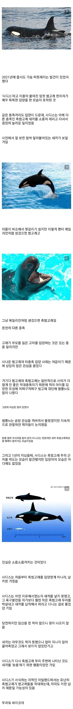

암컷 범고래가 다른 종족 고래를 입양한 이유
댓글

여기다 그 범고래 물위로 고개 내밀며 째려보는 짤 넣음 딱일듯
ㄹㅇ 저 새끼들은 싸이코같음
범고래 특
사이코패스임
눈깔보셈 ㅈㄴ싸이코눈깔임
맛 없게 진화 한 덕분에 포경도 안당함
아 맛없대?
ㅇㅇ
역시 그럼 그렇지 ㄷㄷ;
지능이 높으니까 사람이랑 비슷한 경우도 생기네ㄷㄷ
인간이랑 닮아서 드는 불쾌감
젖이 있다고?
"포유류"
심지어 포유류와도 가능!
다큐멘터리 블랙피쉬 보면 진짜 존나무서움
결국 인간이 나쁜게 결론이긴한데
범고래라는 종이 ㅈㄴ 똑똑하고 무서움
보통 사람기준으로 지능 떨어지면 공감능력도 떨어진다는 얘기 있자늠
범고래가 딱 인간의 지능에서 공감능력 떨어진 수준인거같기도하고
IQ는 높은데 EQ가 낮은 경우도 있으니까..
특히 소시오패스들 중에 있지
글쎄.. 인간이 동물들을 어떻게 대하느냐를 가만히 떠올려보면 딱히 인간이라고 동물에 공감씩이나 해주진 않음. 인간의 인간에 대한 공감은 내가 원하는 일보다 우선할 때가 많은데, 인간의 동물에 대한 공감은 일단 내가 원하는 일을 다 하고 난 다음 할 일 없을 때나 시작되는 일종의 취미생활 같은거거든.
그리고 이런 다른 종을 향한 선택적/취미생활적 공감은 침팬지나 고릴라, 오랑우탄도 할 수 있는 일임. 외려 먹지도 않을 종을 재미삼아 죽이고 쓸데 없이 많이 죽여 파묻는 일을 아무런 의미도 없이 반복적이고 습관적으로 할 수 있는 것이 인간의 특권적 능력이지.
미친년이었네;;;;
범고래는 그냥 그런 사회성이 발달 안한 고지능인거같음 종 자체가 사이코패스같애
고래들 얘기보면
인간들 원시시대에 가족단위 부족생활하는걸 보는 기분임
정병 걸린 줌마였잖아 ㄷㄷㄷ
ㅖ? 시발 예??

'범'하려는게 아니았어?
ㅁㅊ..

그냥 인형 주워간거네. ㅅㅂ 무서운새끼
애완동물이구나